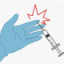

Needle -stick
1- شستن با آب و صابون به مدت 5 دقیقه
2- فرستادن نمونه خون بیمار به آزمایشگاه جهت بررسی سطوح آنتی بادی های هپاتیت سی ، اچ آی وی و آنتی ژن هپاتیت ب
3- انجام رپید تست اچ آی وی بر روی بیمار
4- اطلاع به مرکز کنترل عفونت
5- بررسی سطح آنتی بادی هپاتیت ب در فرد نیدل شده :
در صورت سطح آنتی بادی بالای 10 اقدام خاصی لازم نیست
سطح آنتی بادی کمتر از 10 دریافت دور بوستر و ایمونوگبوبولین
در صورت عدم کامل بودن واکسیناسیون؛ دوره کامل واکسن (0-1-6) و ایمونوگلوبولین
تصویری برای این نسخه موجود نیست.